|
|
|
|Instituto Tecnológico de Costa Rica|Escuela de Matemática| M. Sc. Geovanni Figueroa M. |
1 2
3 4 5
6 7
8 9
10 11
12 13
14 15
16
|
|
La transformada inversa de Laplace
Al aplicar la transformada de Laplace a una ecuación diferencial
la convertimos en una ecuación algebraica, la cual podemos
resolver para 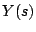, es decir,
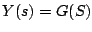. Ahora, como
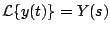 si pudiéramos devolvernos obtendríamos la
solución
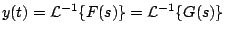
Entonces definamos la transformada inversa.
Ejemplo
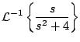
Solución
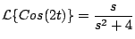
tenemos que
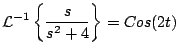
Observación existe un problema potencial al trabajar con
la transformada inversa, puede no ser única. En efecto, es
posible que
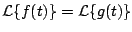, siendo
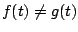. Para nuestro propósito esto no es tan malo
como parece, pues, si
Ejemplo
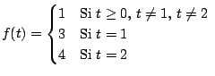
¿Qué se puede concluir ?
Solución
Usando la definición de transformada
Pero, anteriormente hemos comprobado que
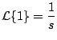
con lo cual las funciones
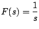
no es única.
El siguiente resultado establece el comportamiento de
Demostración
Puesto que
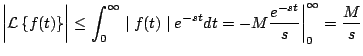
y así 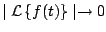 cuando 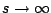, de modo que 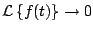 cuando .
Observación: el resultado anterior es válido
independientemente de que
Ejemplo
Solución
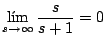
lo cual es falso; por lo tanto no existe tal función.
Observación: con un argumento similar podemos concluir que
no existen una función Los siguientes resultados son útiles en análisis de sistemas de control automático, especialmente cuando se trazan gráficas.
Demostración:
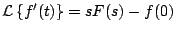
y
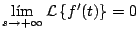
siempre y cuando 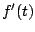 sea continua a trozos y de orden exponencial. Tenemos que
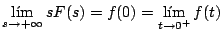
siempre y cuando
Ejemplo
Solución
Note que no fue necesario calcular
Demostración:
El siguiente teorema establece la linealidad de la transformada inversa.
Ejemplo
Solución
Para usar la propiedad de linealidad de la transformada inversa de Laplace primero debemos expandir
en fraciones parciales
ahora sí
El siguiente ejemplo ilustra el proceso que vamos a usar en la solución de ecuaciones diferenciales mediante Laplace. Es un ejemplo que puede ser resuelto de manera más eficiente con las técnicas ya estudiadas, pero el objetivo es aplicar algunas de las propiedades enunciadas hasta ahora e introducir la técnica de solución de ecuaciones diferenciales.
Ejemplo
Solución Aplicando transformada de Laplace a ambos lados de la ecuación diferencial
Ahora debemos de aplicar transformada inversa para hallar
Observación: está ecuación diferencial puede resolverse como una ecuación lineal con factor integrante .
|